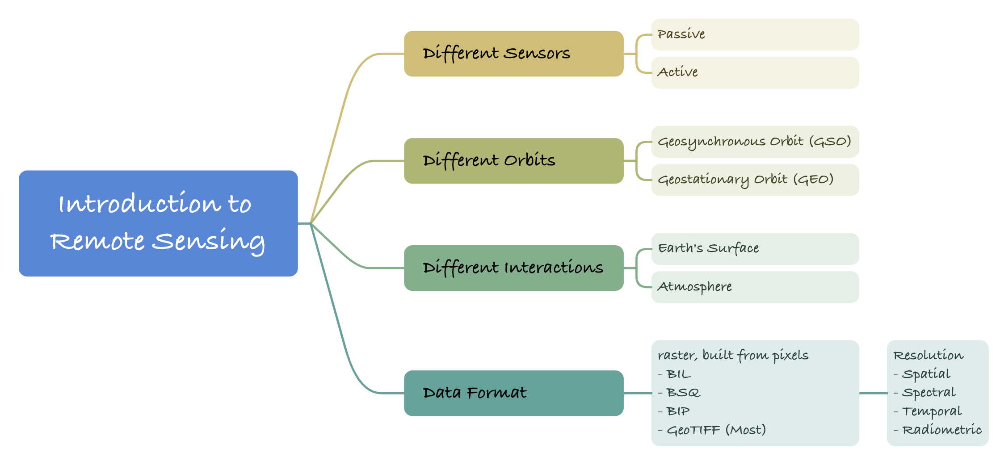
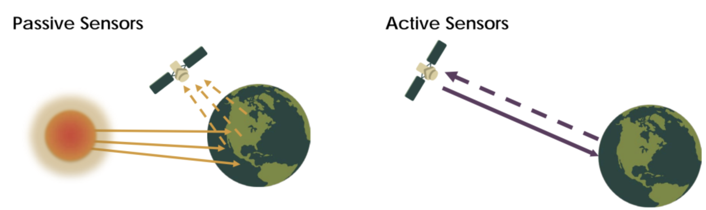
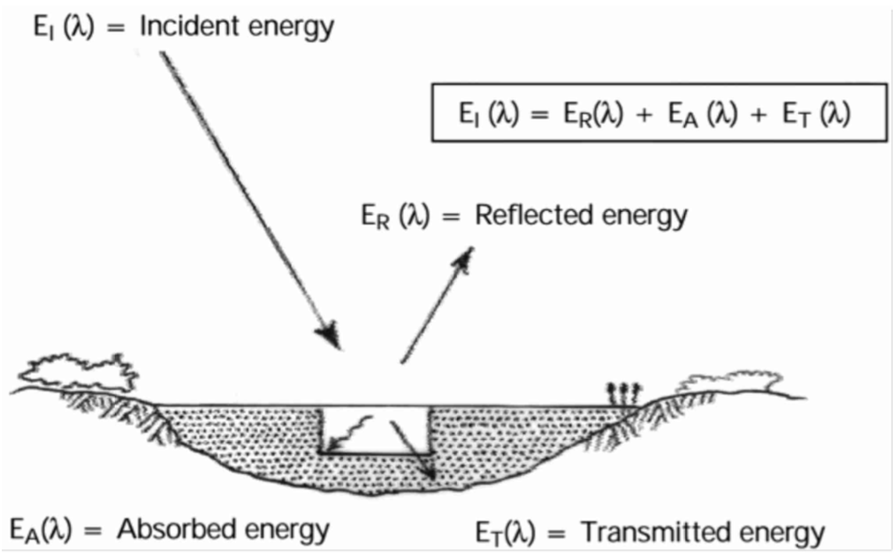
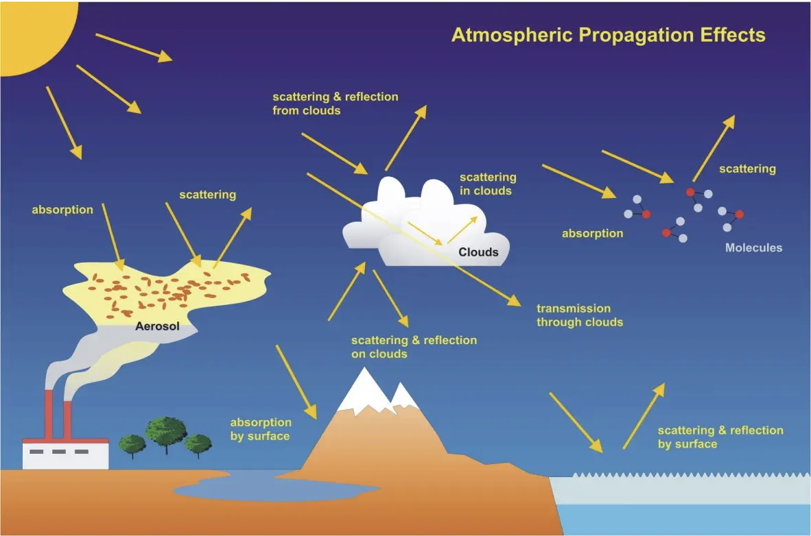
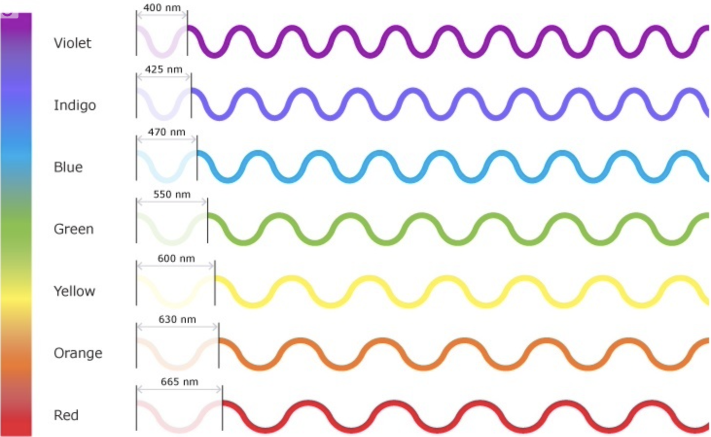
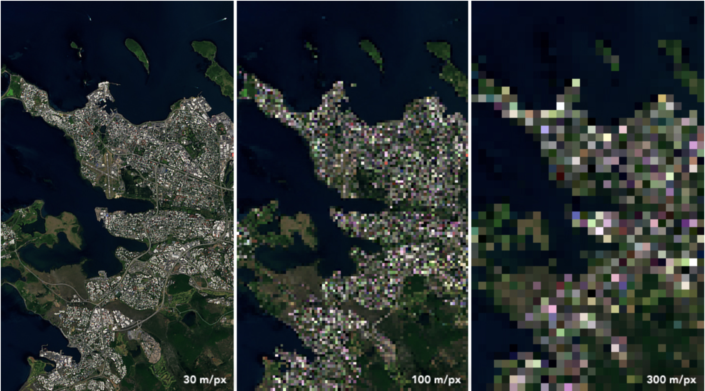
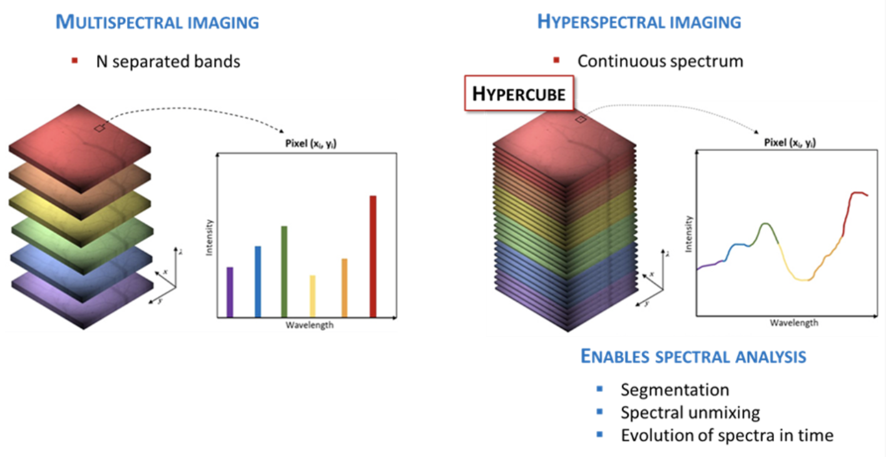
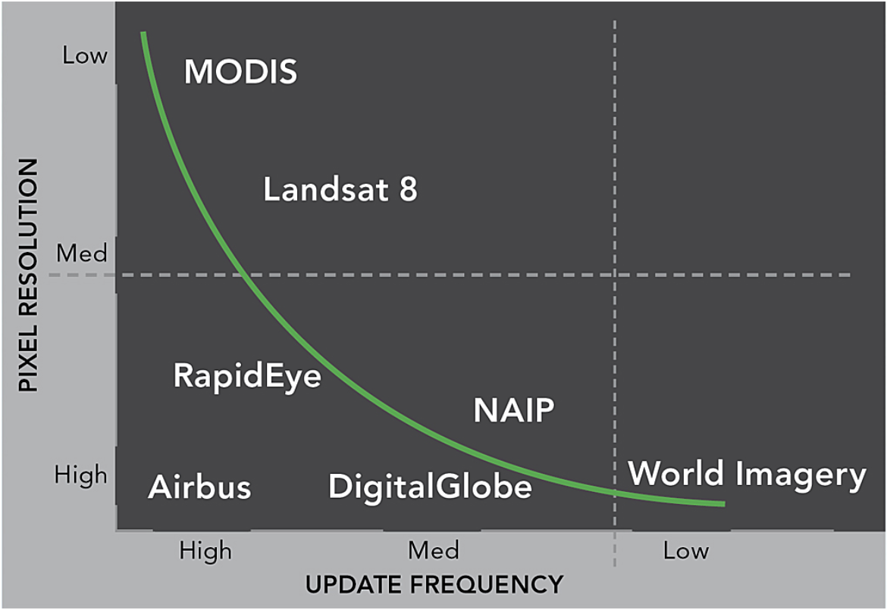
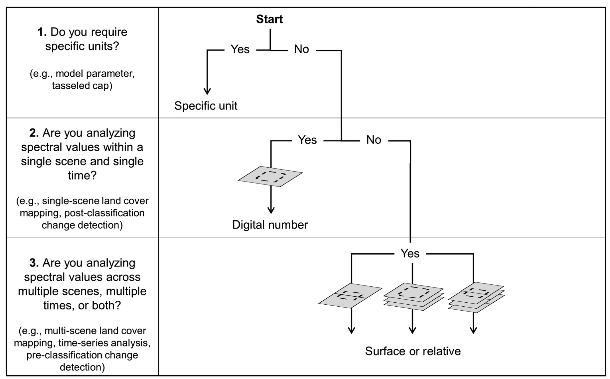

Week 01 Introduction to remote sensing
1. Summary

1.1. Different Sensors
| Energy | Receive | E.g., | Applications | |
|---|---|---|---|---|
| Passive | ❌ | Reflected energy from sun (electromagnetic) | Human eye, Satellite sensor | Remote Sensing, meteorological observation, astronomy |
| Active | ✅ | Electromagnetic that actively emit | Radar, X-ray, LiDAR | ranging, velocity measurement, terrain mapping, and target identification |
 Source: NASA
Passive sensors are more widely used in remote sensing of the Earth and environmental monitoring because they can provide multi-band information on a global scale.
These sensors do not need to actively send signals to the target, but rely on natural radiation, thus enabling energy-efficient, wide-area observations. For this reason, passive sensors are often mounted on satellites to enable remote sensing observations on a global scale.
In addition, passive sensors typically cover multiple wavelength bands, including visible, infrared, and ultraviolet. This broad-spectrum coverage allows them to capture a wide range of features and information about the Earth’s surface, from vegetation cover to surface temperature, in different wavelength bands.
1.2. Different Orbits
| Definition | E.g., | Applications | |
|---|---|---|---|
| Geosynchronous Orbit (GSO) | Satellite’s period matches the Earth’s rotation period, making the satellite’s position relatively fixed above the Earth | The GOES series (Geostationary Operational Environmental Satellites) by the United States and the Meteosat series by Europe | Weather Forecasting, Climate Monitoring, and communications |
| Geostationary Orbit (GEO) | Satellite’s speed matches the Earth’s rotation, allowing it to remain stationary relative to a point on the Earth’s surface. | The International Telecommunications Satellite Organization, SES (Société Européenne des Satellites) | Communication, Observing Earth’s weather, environment, and climate changes, providing valuable remote sensing data |
1.3. Different Interactions
1.3.1. Earth’s Surface
- Energy will be obsorbed by the surface
- Energy being transmitted through the surface
 Source:Ghimire, 2021
Bidirectional Reflectance Distribution Function (BRDF):
Definition: A two-dimensional function used to represent the intensity distribution of light entering a material or surface and then exiting the light at the other end.
Application: Simulates real-life light conditions, detects particle concentrations in the atmosphere, and detects air humidity in the soil.
Reactions that occur when interacting with the Earth’s surface：
Polarization: When electromagnetic waves are affected by interference, scattering or reflection, the direction of vibration changes. It is often used to distinguish between different material properties because different types of materials have different polarization responses.
Fluorescence: A substance is excited to emit light that has a longer wavelength. It can usually be used to detect certain specific compounds or biological processes, and is therefore used in fields such as environmental pollution detection and soil characterisation.
1.3.2. Atmosphere
Atmospheric scattering
 Source:Bovensmann et al., 2011
Q: Why is the sky blue (provided that air particles)
A: Because when the sun is overhead, the shorter wavelength of blue light (as shown in the figure below) is more easily scattered, and thus the sky is observed to be blue. Whereas at sunset, the blue light is scattered away by the atmosphere and the orange-red light passes through the atmosphere into the eye, hence the sky is orange-red.
 Source: The University of Waikato Te Whare Wānanga o Waikato
Similarly, seawater has the ability to absorb and scatter. What we usually observe is blue light scattered by seawater.
In addition, black colour indicates that all light is absorbed and there is no reflection, scattering or projection. Therefore, the sea floor is black without light.
White, on the other hand, is the result of all colours being absorbed in equal amounts and is the result of mixing various colours together.
1.4. Data Format
Majority of remotely sensed data is Raster which is built from pixel. I think this link analysing the difference between a Raster and a Vector is still quite well written and explains what a Raster is quite clearly. In addition, this link also explain raster very well. They also have other information like “Raster bands”, “Image and raster data organization” and so on.
Several File Types: BIL, BSQ, BIP, GeoTIFF(Most seen). This Link provides a detailed introduction to those kind of files with examples.
Resolution:
- Radiometric: The amount of information in each pixel.
8-bit can hold 0-255 possibilities, 11-bit can hold 0-2047 possibilities. Here it is perhaps more superficially understood that subtle colour differences can or cannot be represented.
In addition, different numbers of spectral channels correspond to different spectral ranges measured on different bands. Multiple spectral channels allow the capture of information in different bands of the surface, such as visible light, infrared, etc. For example, AVIRIS has 224 spectral channels.
- Spatial: The size of the actual area represented by each pixel point.
- The higher the resolution, the finer the surface features captured.
 Source: NASA
- Spectral：Ability to distinguish spectral detail over different bands.
Higher spectral resolution indicates that the data has more information in more bands and is able to distinguish between more landmark features and material composition.
In data, each band is stored in a dedicated grating layer. Spectral data can be discrete or continuous.
 Source: NIREOS
- Temporal: Time interval for acquiring data.
- The following figure shows the distribution of time intervals versus pixel resolution for different satellites.
 Source: ESRI
2. Application
The first week was mostly about introducing concepts, so for the application part I tried to start with Raster data. As we learnt in the GIS module last year, first we have to look at the data, which is already done in SNAP. Then we have to do some pre-processing of the data. So how do you deal with raster data? I found a flowchart from Young et al. that I can refer to:
 Source: Young et al., 2017
if you need specific units (e.g., model parameters, tasseled cap transformations, etc.), then use specific units for processing.
if you are analysing spectral values in a single scene and at a single time (e.g., single scene land cover mapping, post-classification change detection), process the data in “number of digits” format.
if you are analysing spectral values for multiple scenes, multiple times, or both (e.g., multi-scene land cover mapping, time series analysis, preclassification change detection), the data are processed using “surface or relative” values.
I think this table might help me get into processing raster data faster in the future.
3. Reflection
The first week was a relatively basic introductory class, so overall it wasn’t too difficult to get a basic knowledge of an unfamiliar field.
Although I had forgotten a bit about the physics when it came to wavelengths and frequencies, it was good to see that only some concepts were covered. The subsequent understanding and working principle are not affected.
In addition, the storage and processing of remote sensing data (raster) in class was also very confusing. But the good thing is that the Drop-in session immediately following was able to talk about and solve this problem. Each pixel point has a unique spectral map (if it’s a multi-band image), usually synthesised from Red, Green, and Blue. But it is also possible to choose different wavelengths for the synthesis, depending on the needs of the study.
I’m thankful to ArcGIS, ESRI, and NASA for really providing a lot of valid information in their offical documents to help me make sense of it. For example, this link is a detailed description of the Raster data. Also thanks to ChatGPT for being able to give me some basic Q&A’s.